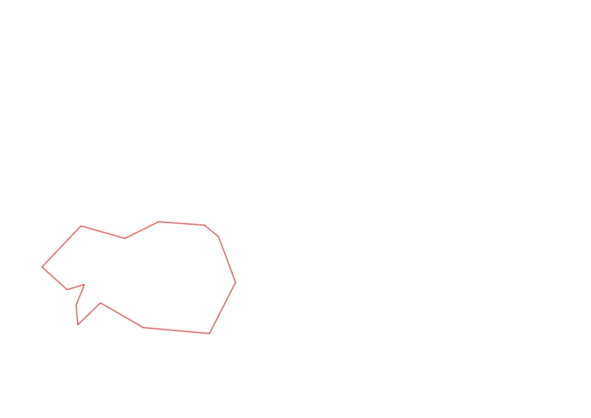
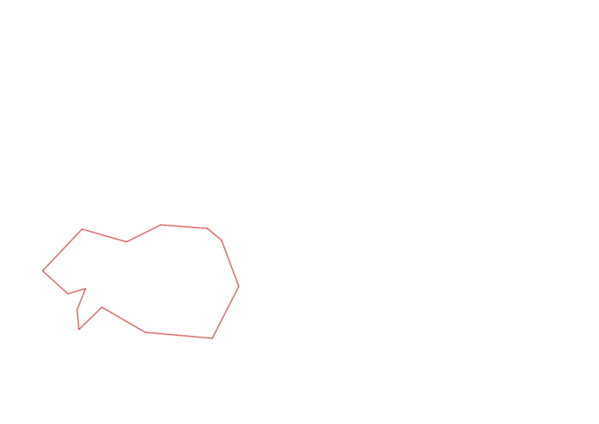

| Control |
Points |
Time Punched |
Distance |
Your Time |
Pace |
Place |
Fastest Time |
Median Time |
% Behind Fastest |
| 127 |
20 |
|
0.06 |
0:00:50 |
13:53 |
23 / 30 |
0:00:01 |
0:00:32 |
4900% |
| 42 |
40 |
|
0.17 |
0:04:45 |
27:56 |
19 / 20 |
0:01:06 |
0:01:52 |
331% |
| 61 |
60 |
|
0.21 |
0:06:10 |
29:21 |
20 / 20 |
0:02:20 |
0:03:34 |
164% |
| 59 |
50 |
|
0.24 |
0:04:30 |
18:45 |
19 / 19 |
0:01:47 |
0:02:30 |
152% |
| 41 |
40 |
|
0.18 |
0:06:43 |
37:18 |
1 / 1 |
0:06:43 |
0:06:43 |
0% |
| 40 |
40 |
|
0.11 |
0:01:39 |
15:00 |
20 / 24 |
0:00:45 |
0:01:00 |
120% |
| 71 |
70 |
|
0.07 |
0:01:53 |
26:54 |
12 / 12 |
0:00:34 |
0:01:00 |
232% |
| 54 |
50 |
|
0.08 |
0:01:49 |
22:42 |
33 / 33 |
0:00:27 |
0:00:45 |
303% |
| 69 |
60 |
|
0.07 |
0:08:11 |
1:56:54 |
20 / 20 |
0:01:00 |
0:01:56 |
718% |
| 53 |
50 |
|
0.12 |
0:05:29 |
45:41 |
26 / 26 |
0:01:16 |
0:01:51 |
332% |
| 44 |
40 |
|
0.2 |
0:05:05 |
25:25 |
22 / 22 |
0:00:39 |
0:01:40 |
682% |
| 130 |
30 |
|
0.16 |
0:02:56 |
18:20 |
4 / 4 |
0:00:58 |
0:01:26 |
203% |
| 126 |
20 |
|
0.14 |
0:02:23 |
17:01 |
12 / 12 |
0:01:09 |
0:01:26 |
107% |
| Finish |
0 |
|
0.17 |
0:01:38 |
09:36 |
8 / 9 |
0:00:31 |
0:00:57 |
216% |
Total Distance Covered: 1.98km
Points Scored: 570
Late Penalty: 0
Final Score: 570
Total Time: 0hours 54minutes 1seconds
Efficiency: 287.88 points/km
 
